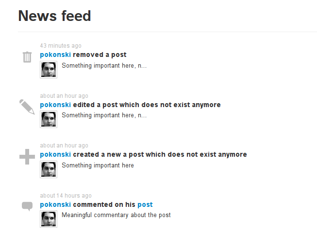
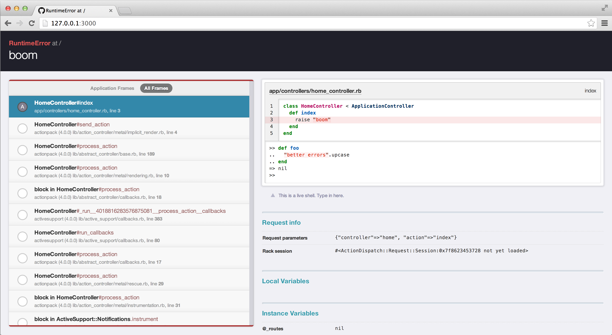

1 Gems and Bundler
1.1 gems
Code reuse is a deciding factor for programmer productivity. In Ruby
the unit of reuse is called a gem. rubygems is the package manager for ruby,
it let's you install gems on your system.
A gem has a name (e.g. rake) and a version number (e.g. 10.4.2).
It can be written in plain ruby or sometimes in ruby and c. Many gems
depend on system libraries that need to be installed before the gem can
be installed. For example the rmagick
gem for image manipulation needs the library ImageMagick.
So most of the time installing a gem is as simple as
> gem install rails_best_practices Successfully installed rails_best_practices-1.15.7 Parsing documentation for rails_best_practices-1.15.7 Installing ri documentation for rails_best_practices-1.15.7 Done installing documentation for rails_best_practices after 2 seconds 1 gem installed
But sometimes you have to do other installations first. On your development machine this might look like this:
# install node on a mac > brew install nodejs > gem install uglifier
Sometimes you need to set include paths when compiling the c-part of the gem, e.g.:
> gem install eventmachine
... error messages ...
In file included from binder.cpp:20:
./project.h:116:10: fatal error: 'openssl/ssl.h' file not found
#include <openssl/ssl.h>
^
> brew install openssl
> gem install eventmachine -- --with-cppflags=-I/usr/local/opt/openssl/include
In production you probably have to deal with Linux, and you may not have the right permissions to install system libraries. A typical example would be:
$dev> ssh my.production.machine $production> sudo apt-get install libmagick++-dev $production> gem install rmagick $production> gem install paperclip
Now that you have installed the gem once by hand you can be sure that it can also be reinstalled by bundler.
See also:
- what is a gem
- find 150.000 gems at rubygems.org
1.2 dependency hell
For a rails project you will be using a lot of gems. This will lead to two problems:
- dependency resolution: gem A depends on version 1.1 of gem C, while gem B wants at least version 1.5. You need to find the right version of every gem in your project that actually fits together
- different installation: when deploying to a production server, or even just when shareing code with other developers you need to make sure that the same constellation of gems and versions is used on every machine
1.3 bundler saves us

Bundler is the name of the tool that saves us from dependency hell.
Bundler is itself a gem, so you install it with gem install bundler.
Beware: the command you will be using called bundle, not bundler.
There is how it works: In every ruby project you write
a Gemfile in which you define which gems and (to a certain degree) which versions you want.
When you run bundle install bundler will:
- read the Gemfile,
- pick out compatible versions of all the gems (if possible),
- install all these gems
- write
Gemfile.lock
The lock-file contains a complete list of all the gems necessary for your project, and their version numbers. These are now locked down, and will not change!
When deploying to a new development machine or the production server,
you run bundle install and the exact same versions are now installed.
1.4 defining versions
In the Gemfile you can specify which versions should be used. But don't overdo it! Bundler does a good job picking versions, if you specify every version number by hand you are doing too much work.
Some examples of the different ways of specifying version number and source:
# Gemfile source 'https://rubygems.org' ruby '2.3.1' gem 'rails', '~> 5.0.0', '>= 5.0.0.1' gem 'sqlite3' gem 'puma', '~> 3.0'
The arrow ~> will only allow an increase in the
last (right most) number, so ~> 5.0.0 does allow 5.0.0.7 but not 5.0.1 or 5.1.
This is called a pessimistic version constraint, read more about
it in the rubygem documentation.
1.5 gems and rails
The configuration for a gem is found in the initializer directory,
for example for devise the configuration file would be config/initializers/devise.rb.
A gem may install new generators for rails, run rails generate to see a list
of available generators.
A gem may install rake tasks, run rails -T to see a list.
2 Some Gems
This list was inspired by the Rails Rumble gem teardown and coodbeerstartups "Must Have Gems for Development Machine in Ruby on Rails ".
2.1 File Upload
File Upload has been integrated into Rails 5 with ActiveStorage, there is no need to use carrierwave or or paperclip and more.
After file upload you might want to resize or crop your images automatically. This is traditionally done with the library ImageMagick:
- gem rmagick image processing with image magick
You might also want to know how to use ImageMagick on the UNIX commandline:
2.2 Authentication
2.3 Permalinks
You don't want the database keys to be visible in your URLs? Use Friendly IDs instead:
- gem friendlyid
2.5 Let Users format their Texts
Letting users enter HTML is a dangerous idea - it's really hard to avoid the security problems. An alternative is to let them enter a simpler markup language, like Markdown. You store the markdown in your database, and convert it to HTML when displayed using a gem:
- gem github-markup
Or use the builtin editor (since rails 6):
2.6 Pagination
Do you need to displaying a lot of items? Use a pagination gem to go through them page by page:
- gem kaminari, asciicast about it
- other gems in category pagination of the ruby toolbox
2.7 Filter
You need to filter objects shown by the index action?
- gem brita can be used in APIs and full rails apps
2.9 Search
You need to search in more than just one attribute of your model? use a search gem:
- gem ransack for building search fields
- gem pg_search uses postgresql's fulltext search
- gem searchkick uses elasticsearch with many more options for fulltext search, e.g. for misspellings
- other gems in category rails_search of the ruby toolbox
2.10 Activity Stream
If you want to give users an overview of what happened recently you can use an activity stream, similar to what you see in facebook.

- gem public_activity
2.11 Admin Backend
Create a Backend for manipulating data with a few lines of code:

- gem activeadmin
- gem rails_admin
2.12 Sending Mail
To send mail from Rails use ActionMailer.
To see the generated mails in your web browser instead of sending them, use the gem letter_opener
To receive Mail use ActionMailbox
2.13 HTTP Requests
This might be handy for downloading from Webpages or APIs
- gem curb - the http library curl for ruby
2.14 Using APIs
2.15 Geo Information, Geocoding
sometimes you want to convert longitude/latitude coordinates to street addresses, or the reverse
- gem geocoder
Use postgres's inbuilt geographical features:
2.17 Testing
- gem factory_bot_rails for creating test data.
- gem capybara as the "browser" for acceptance tests, with
- gem capybara-webkit for testing client side javascript.
2.18 Understanding your Code better

- gem better_errors
- gem meta_request - supporting gem for Rails Panel, a Google Chrome extension for Rails development
- gem annotate - inserts the db schema as comments in your model.rb file
- gem railroady - UML diagram generation for Rails projects, capable of analyzing existing models and controllers
- gem bullet - helps you improve your usage of activerecord queries
- gem brakeman - checks for security vulnerabilities
- gem rails_best_practices
- gem rubocop - static code analyzer
- gem derailed_benchmarks
- gem metric_fu - many code metrics for your rails project
3 Ressources
- Ruby Gems
- Bundler
- awesome-ruby
- the Ruby Toolbox is organized in categories that help you find alternative solutions
- How does Bundler work, anyway? talk by Andre Arko at RubyConf 2015